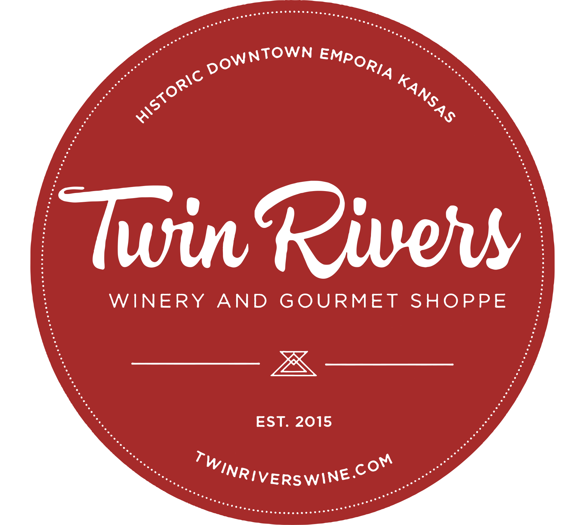
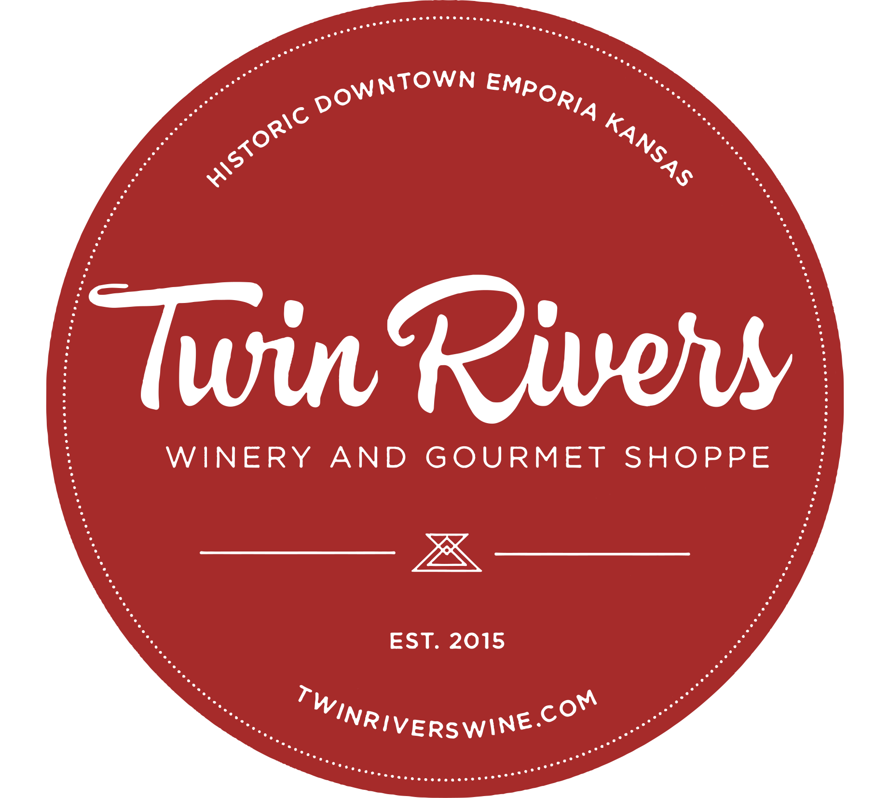

Pottawatomie County
Uptappd:
(N/A)
503 Miller Dr, Wamego, KS 66547
Riley County
(3.6)
1745 Wildcat Creek Rd, Manhattan, KS 66503
Johnson County
(3.62)
13875 S Gardner Rd #1, Olathe, KS 66061
Miami County
14730 KS-68, Louisburg, KS 66053
Butler County
(3.36)
11249 SW 160th St, Rose Hill, KS 67133
(3.75)
11000 S Woodland St, Olathe, KS 66061
Douglas County
1826 E 1150 Rd, Lawrence, KS 66049
Lyon County
(3.92)
627 Commercial St, Emporia, KS 66801
Sedgwick County
(3.71)
1719 N Rock Rd Suite 133, Wichita, KS 67206


 
